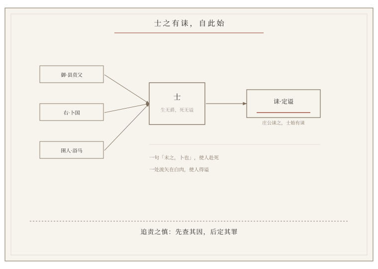

檀弓上 · 三·十六 · 第 219 课
鲁庄公与宋人战于乘丘，县贲父御、卜国为右，马惊败绩，公坠，佐车授绥。公曰「末之，卜也」；县贲父曰「他日不败绩，而今败绩，是无勇也」，遂死之。圉人浴马，有流矢在白肉，公曰「非其罪也」，遂诔之。注「士之有诔，自此始也」。
说什么事：一场败仗里，一个御者用死来洗一个「无勇」的疑。
落在哪一层：礼，兼及礼意与史。论「诔」这一礼的起点。
为何编在此位：上节论待人之宽，此节论待死者之公。宽与公，皆是礼之所以立。
【经】魯莊公及宋人戰於乘丘，縣賁父御，卜國為右。馬驚敗績，公隊，佐車授綏。公曰：「末之，卜也！」縣賁父曰：「他日不敗績，而今敗績，是無勇也。」遂死之。圉人浴馬，有流矢在白肉。公曰：「非其罪也。」遂誄之。士之有誄，自此始也。
【注】乘丘，鲁地。县贲父、卜国，皆鲁士。马惊败绩，惊奔失列。公队，佐车授绥，戎车之贰曰佐；绥，所执以升车者。末，微也；之，哉也。言卜国无勇。遂死之，犹自杀也。流矢，飞矢也；白肉，股里肉。诔其赴敌之功以为谥。诔，谥也。
【疏】此一节论鲁庄公与宋战于乘丘，县贲父为御而死，鲁君诔之之事。案庄十年《左传》「齐师、宋师次于郎，公子偃帅师从雉门窃出，蒙皋比而先犯之，公从之，大败宋师于乘丘」，是庄公败宋师也。此云「马惊败绩」者，彼是既败宋师之后，而公又逐之，马惊而败；或此是前败宋师之时。「佐车授绥」者，《周礼》戎仆掌王倅车之政，倅车，戎车之副也；《少仪》注「戎猎之副曰佐」，是佐车亦曰副也。熊氏云「此是诸侯礼，故有佐车授绥」，若天子，则《大驭》云「王不亲御，故无佐车授绥」之事，未明。县贲父死在败绩之后，故公曰「末之卜也」，言卜国无勇，微哉此卜也。案昭七年《左传》「牛有牧，马有圉」，是圉人养马者也。服虔云「白肉，股里肉」；《尔雅·释草》「笋，竹萌」，无与肉近者，此言「白肉」者，以马股里之肉色白，故名。诔之者，诔其功状，以作谥也。《周礼·大史》「遣之日读诔」，《小史》「卿大夫之丧，读诔谥」，是诔以上下通称；此云「士之有诔自此始」者，以《士冠礼》云「古者生无爵，死无谥」，殷以上士无谥；周虽以士为爵，犹无谥也；今庄公诔之，是周之士有诔自庄公始，故云「自此始也」。
败绩 注「惊奔失列」。车败阵乱。
队 注「公坠」。坠下车。
佐车 注「戎车之贰曰佐」。副车。
绥 注「所执以升车者」。挽以上车的绳。
末之，卜也 注「末，微也；之，哉也」。谓卜国无勇。
白肉 注「股里肉」。马股内侧之色白处。
诔 注「诔其赴敌之功以为谥」。累其功以定谥。
鲁庄公与宋人在乘丘作战。县贲父为御，卜国为车右。马惊，阵乱，庄公坠车，佐车上的人把绥递给他。庄公说：「卜国真是无用啊！」县贲父说：「往日不曾败绩，今日却败绩，这是我无勇。」于是赴敌而死。后来圉人洗马，见马股里有一支飞矢。庄公说：「这不是他的罪过。」于是为他作诔。士之有诔，从这时开始。
此节三段：败绩、责言、翻案。败绩之时，公一句「末之，卜也」，把罪归到车右；县贲父不辩公之失言，而以「他日不败绩而今败绩」自责，赴死。到最后圉人洗马，发现流矢在马股里——马惊不是人的错，人与马都无罪。公于是「诔之」。一句迟到的公道，成了「士之有诔」的开端。
第一层 御者之责 马惊而败，御者本当负责。县贲父不自解，而曰「是无勇也」——他把「败」解作「无勇」，把勇看作御者之本。此一念，使他把别人的过失认作自己的耻。
第二层 「末之，卜也」之伤 注「末，微也；之，哉也」。庄公一句话，把车右说成无用。此语未必是公之定论，但出口即伤人。礼之难，常在位高者一句无心之言。
第三层 流矢在白肉 此一转是全场之眼。马股有矢，则马惊有因，人无罪。疏辨「白肉」为股里肉色白处。古人的「翻案」，不靠情，靠一处物证。
第四层 诔自此始 注「诔其赴敌之功以为谥」。疏引《士冠礼》「古者生无爵，死无谥」，言殷以上士无谥；周虽有士爵而犹无谥，至庄公诔之，士始有诔。这是一个制度史的开端，而其起因，是一句迟到的公道话。
与今日何干 凡追责，宜先查因。此节所示：一句「无用」，可使人赴死；一处流矢，可使人得谥。追责之慎，不是心软，是怕在证据未明时伤了好人。
| 左 | 右 |
|---|---|
| 战于乘丘 | 庄公与宋人战，鲁地 |
| 县贲父御，卜国为右 | 御者与车右，皆鲁士 |
| 马惊败绩 | 惊奔失列 |
| 公队，佐车授绥 | 公坠车，副车递绥 |
| 末之，卜也 | 末，微也；之，哉也 |
| 他日不败绩而今败绩 | 是无勇也 |
| 遂死之 | 赴敌而死，以死洗耻 |
| 流矢在白肉 | 马股里中箭，马惊有因 |
| 非其罪也，遂诔之 | 迟到的公道，定为谥 |
| 士之有诔自此始 | 生无爵死无谥之例，自此而破 |
画一片战后不久的野地，视点略低，地面有车辙与断辕。画面左半：一辆倾覆的战车，车轮一只立、一只倒，车箱侧翻，车旁一匹卸了鞍的马低头站着，后股内侧有一小处箭伤（一根短矢尚插着，尾羽微露）。画面右半：一名圉人蹲在马的股侧，一手扶着马腿，一手正欲取那支箭，身侧放着水盆与拭布。再远处偏上，一道极浅的土坡，坡上无人，只插着一支断旗。不写文字、不画血迹。赭色只用在断旗与那支箭的尾羽上。
